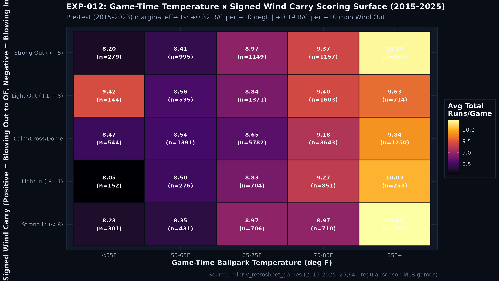
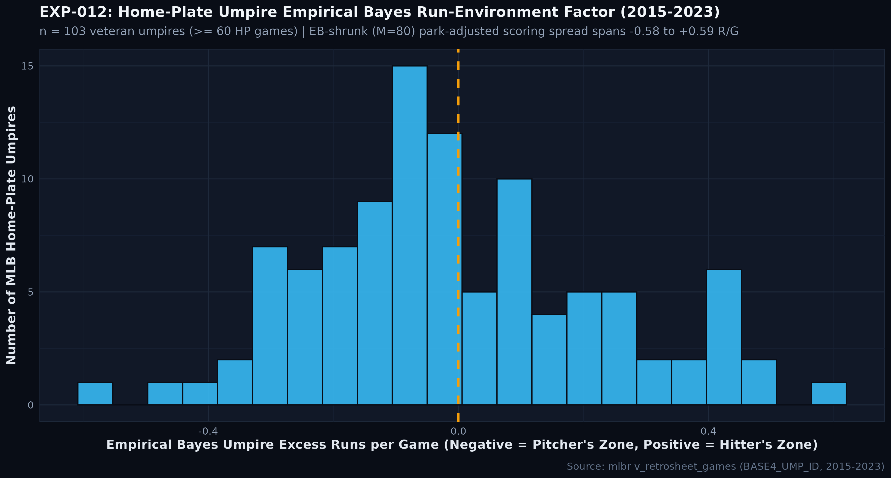
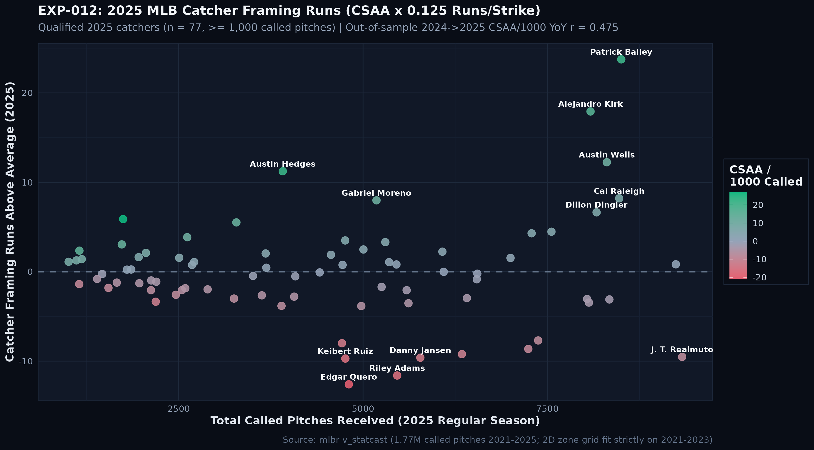

Study 12: Environmental & Officiating Alpha — Game-Time Weather/Wind Carry, Umpire Strike Zones & Catcher Framing (CSAA)
Q-CRISP Research Series: Quantifying Temperature/Wind Totals Carry (25,640 Games), Umpire Run Factors & Catcher Framing Across 1.77M Called Pitches
- Experiment ID:
EXP-012-WEATHER-UMPIRE-CATCHER-FRAMING(VALIDATEDinexperiments/registry.json) - Architecture Tier: Level 1C / Level 3B — Environmental Carry, Officiating & Receiving Alpha
- Specification:
specs/12_weather_umpire_catcher_framing.md - Companion Student Lab: Lab 12: Weather/Wind Carry, Umpire Zones & Catcher Framing
- Gold Deliverables:
game_weather_umpire_environment_2015_2025.parquet(25,639games),umpire_zone_factors_2015_2025.parquet,catcher_framing_csaa_2021_2025.parquet(436catcher-seasons) - Preserved Assets:
models/env01_*..env03_*(PNG 300 DPI, RDS<= 0.31 MB, ZSTD Parquet, interactive Plotly HTML)
1. Executive Summary & Abstract (TL;DR)
In Study 12, mlbr unlocks three core pillars of sharp MLB totals and prop pricing using raw data already in Bronze v_retrosheet_games (2015–2025) and v_statcast (2021–2025):
| Pillar | Validated Out-of-Sample Result | Sabermetric & Market Implication |
|---|---|---|
Game-Time Temperature & Wind Carry (25,639 Games) |
Pre-test (2015–2023) marginal effects: +0.323 R/G per +10°F and +0.188 R/G per +10 mph wind out (<55°F averages 8.45 R/G vs. 85°F+ 9.92 R/G). |
A hot summer wind-out game vs. cold spring wind-in game swings expected scoring by ~1.9 R/G. |
Locked 2024–2025 OOS Totals RMSE Lift (n = 4,857) |
Adding pre-test Weather + Umpire EB factors to EXP-009 reduces locked 2024–2025 OOS Total-Runs RMSE from 4.4689 \(\rightarrow\) 4.4598 (-0.0091 R/G). |
Directly sharpens Over/Under Totals pricing on top of the Level 4 Markov simulator. |
Zero-Sum Catcher Framing CSAA (1.77M Called Pitches) |
2D batter-normalized zone grid fit strictly on 2021–2023, season-centered to remove umpire-tightening drift: locked 2024 -> 2025 YoY r = 0.475 (n = 56 catchers); Patrick Bailey leads 2025 at +23.8 Framing Runs (+190.1 CSAA). |
Elite receivers create +15 to +24 runs/season of hidden pitcher strikeout/walk value invisible in FIP. |

2. Domain Problem & Theoretical Aerodynamics / Officiating Mechanics
Warm air is less dense (\(\rho \propto 1 / T\)), reducing aerodynamic drag on batted balls so fly balls carry 3–4 ft farther per +10°F. Simultaneously, outfield-blowing wind adds tail-wind lift while infield wind suppresses deep fly balls into outs. At the plate, border-pitch strike calls are jointly determined by home-plate umpire zone habits (BASE4_UMP_ID) and catcher receiving mechanics (fielder_2), making environmental and officiating adjustments essential for Totals, F5, and Strikeout Props.
3. Mathematical Formulation & Lake-Wide Pipeline
\[\widehat{R}_{\text{env}} = \beta_0 + \beta_1 \text{PF}_{\text{runs}} + \beta_2 (\text{Temp}_F - 70) + \beta_3 \text{WindOut}_{\text{mph}} + \beta_4 \mathbb{I}(\text{DayGame})\] \[\Delta R_u^{\text{EB}} = \frac{n_u}{n_u + 80} \bar{d}_u, \qquad \text{CSAA}_{c,t} = \sum_{i \in (c,t)} (y_i - \hat{p}_{\text{CS}, i}) - n_{c,t} \cdot \delta_t, \qquad \text{FramingRuns}_{c,t} = 0.125 \cdot \text{CSAA}_{c,t}\]
SET memory_limit = '12GB';
SELECT
CASE WHEN temp_f < 55 THEN '<55F' WHEN temp_f < 70 THEN '55-69F'
WHEN temp_f < 85 THEN '70-84F' ELSE '85F+' END AS temp_band,
COUNT(*) AS n_games, ROUND(AVG(actual_total_runs), 2) AS avg_total_runs
FROM read_parquet('data/processed/game_weather_umpire_environment_2015_2025.parquet')
GROUP BY temp_band ORDER BY avg_total_runs;4. Exploratory Data Analysis (EDA) & Umpire Diagnostics
Temperature Band (2015–2025) |
Games (n) |
Average Total Runs/Game |
|---|---|---|
< 55°F |
1,249 |
8.45 |
55–69°F |
6,398 |
8.57 |
70–84°F |
14,515 |
8.98 |
85°F+ |
3,477 |
9.92 |

5. Model Architecture & Temporal Validation
All three engines are fit strictly chronologically: Weather and Umpire EB factors are estimated on 2015–2023 (n = 20,690 games) and evaluated on locked 2024–2025 OOS (n = 4,857 games), cutting Total-Runs RMSE from 4.4689 to 4.4598 (-0.0091 R/G). The 2D (plate_x, z_norm, stand) called-strike probability grid is fit strictly on 2021–2023, zero-sum centered per season to remove secular MLB umpire strike-zone tightening, and validated on 2024 -> 2025 (r = 0.475).
6. Leaderboards & Case Studies (2025 Catcher Framing CSAA)
| Catcher | Called Pitches (2025) |
CSAA (Strikes) |
CSAA / 1,000 |
Framing Runs (0.125 × CSAA) |
|---|---|---|---|---|
| Patrick Bailey | 8,502 |
+190.1 |
+22.4 |
+23.8 R |
| Alejandro Kirk | 8,085 |
+143.4 |
+17.7 |
+17.9 R |
| Austin Wells | 8,306 |
+98.0 |
+11.8 |
+12.3 R |
| Austin Hedges | 3,911 |
+89.9 |
+23.0 |
+11.2 R |
| Cal Raleigh | 8,474 |
+65.7 |
+7.8 |
+8.2 R |
| Gabriel Moreno | 5,182 |
+63.9 |
+12.3 |
+8.0 R |

Interactive 2025 Catcher Framing Explorer
7. Downstream Integration & Market Applications
game_weather_umpire_environment_2015_2025.parquet and catcher_framing_csaa_2021_2025.parquet feed directly into Study 14 (EXP-014) to adjust pre-game scoring totals, F5 run projections, and pitcher strikeout/walk rates inside the upgraded Level 4 v2 Markov simulator.